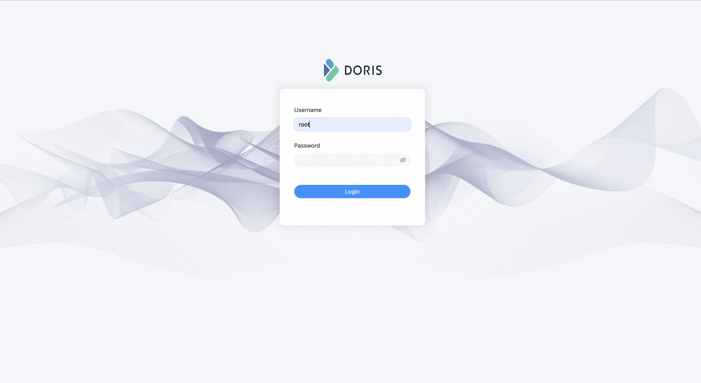
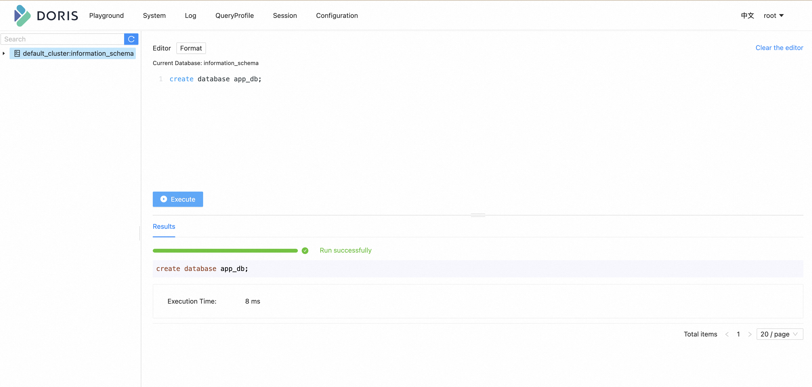
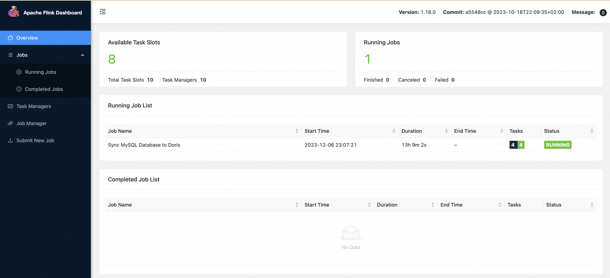

Streaming ELT from MySQL to Doris using Flink CDC 3.0¶
This tutorial is to show how to quickly build a Streaming ELT job from MySQL to Doris using Flink CDC 3.0，including the feature of sync all table of one database, schema change evolution and sync sharding tables into one table.
All exercises in this tutorial are performed in the Flink CDC CLI, and the entire process uses standard SQL syntax, without a single line of Java/Scala code or IDE installation.
Preparation¶
Prepare a Linux or MacOS computer with Docker installed.
Prepare Flink Standalone cluster¶
Download Flink 1.18.0 ，unzip and get flink-1.18.0 directory.
Use the following command to navigate to the Flink directory and set FLINK_HOME to the directory where flink-1.18.0 is located.cd flink-1.18.0Enable checkpointing by appending the following parameters to the conf/flink-conf.yaml configuration file to perform a checkpoint every 3 seconds.
execution.checkpointing.interval: 3000
Start the Flink cluster using the following command.
./bin/start-cluster.sh
If successfully started, you can access the Flink Web UI at http://localhost:8081/, as shown below.

Executing start-cluster.sh multiple times can start multiple TaskManagers.
Prepare docker compose¶
The following tutorial will prepare the required components using docker-compose.
Host Machine Configuration
SinceDorisrequires memory mapping support for operation, execute the following command on the host machine:sysctl -w vm.max_map_count=2000000
Due to the different ways of implementing containers internally on MacOS, it may not be possible to directly modify the value of max_map_count on the host during deployment. You need to create the following containers first:
docker run -it --privileged --pid=host --name=change_count debian nsenter -t 1 -m -u -n -i sh
The container was created successfully executing the following command:
sysctl -w vm.max_map_count=2000000
Then exit exits and creates the Doris Docker cluster.
Start docker compose Create a
docker-compose.ymlfile using the content provided below:version: '2.1' services: doris: image: yagagagaga/doris-standalone ports: - "8030:8030" - "8040:8040" - "9030:9030" mysql: image: debezium/example-mysql:1.1 ports: - "3306:3306" environment: - MYSQL_ROOT_PASSWORD=123456 - MYSQL_USER=mysqluser - MYSQL_PASSWORD=mysqlpw
The Docker Compose should include the following services (containers):
MySQL: include a database named
app_dbDoris: to store tables from MySQL
To start all containers, run the following command in the directory that contains the docker-compose.yml file.
docker-compose up -d
This command automatically starts all the containers defined in the Docker Compose configuration in a detached mode. Run docker ps to check whether these containers are running properly. You can also visit http://localhost:8030/ to check whether Doris is running.
Prepare records for MySQL¶
Enter MySQL container
docker-compose exec mysql mysql -uroot -p123456create
app_dbdatabase andorders,products,shipmentstables, then insert records-- create database CREATE DATABASE app_db; USE app_db; -- create orders table CREATE TABLE `orders` ( `id` INT NOT NULL, `price` DECIMAL(10,2) NOT NULL, PRIMARY KEY (`id`) ); -- insert records INSERT INTO `orders` (`id`, `price`) VALUES (1, 4.00); INSERT INTO `orders` (`id`, `price`) VALUES (2, 100.00); -- create shipments table CREATE TABLE `shipments` ( `id` INT NOT NULL, `city` VARCHAR(255) NOT NULL, PRIMARY KEY (`id`) ); -- insert records INSERT INTO `shipments` (`id`, `city`) VALUES (1, 'beijing'); INSERT INTO `shipments` (`id`, `city`) VALUES (2, 'xian'); -- create products table CREATE TABLE `products` ( `id` INT NOT NULL, `product` VARCHAR(255) NOT NULL, PRIMARY KEY (`id`) ); -- insert records INSERT INTO `products` (`id`, `product`) VALUES (1, 'Beer'); INSERT INTO `products` (`id`, `product`) VALUES (2, 'Cap'); INSERT INTO `products` (`id`, `product`) VALUES (3, 'Peanut');
Create database in Doris¶
Doris connector currently does not support automatic database creation and needs to first create a database corresponding to the write table.
Enter Doris Web UI。
http://localhost:8030/
The default username isroot, and the default password is empty.
Create
app_dbdatabase through Web UI.create database app_db;

Submit job using FlinkCDC cli¶
Download the binary compressed packages listed below and extract them to the directory
flink cdc-3.0.0 '：
flink-cdc-3.0.0-bin.tar.gz flink-cdc-3.0.0 directory will contain four directorybin,lib,log,conf.Download the connector package listed below and move it to the
libdirectory
Download links are available only for stable releases, SNAPSHOT dependencies need to be built based on master or release- branches by yourself.Write task configuration yaml file Here is an example file for synchronizing the entire database
mysql-to-doris.yaml：################################################################################ # Description: Sync MySQL all tables to Doris ################################################################################ source: type: mysql hostname: localhost port: 3306 username: root password: 123456 tables: app_db.\.* server-id: 5400-5404 server-time-zone: UTC sink: type: doris fenodes: 127.0.0.1:8030 username: root password: "" table.create.properties.light_schema_change: true table.create.properties.replication_num: 1 pipeline: name: Sync MySQL Database to Doris parallelism: 2
Notice that:
tables: app_db.\.* in source synchronize all tables in app_db through Regular Matching.
table.create.properties.replication_num in sink is because there is only one Doris BE node in the Docker image.
Finally, submit job to Flink Standalone cluster using Cli.
bash bin/flink-cdc.sh mysql-to-doris.yaml
After successful submission, the return information is as follows：
Pipeline has been submitted to cluster.
Job ID: ae30f4580f1918bebf16752d4963dc54
Job Description: Sync MySQL Database to Doris
We can find a job named Sync MySQL Database to Doris is running through Flink Web UI.

We can find that tables are created and inserted through Doris Web UI.

Synchronize Schema and Data changes¶
Enter MySQL container
```shell
docker-compose exec mysql mysql -uroot -p123456
```
Then, modify schema and record in MySQL, and the tables of Doris will change the same in real time：
insert one record in
ordersfrom MySQL:INSERT INTO app_db.orders (id, price) VALUES (3, 100.00);
add one column in
ordersfrom MySQL:ALTER TABLE app_db.orders ADD amount varchar(100) NULL;
update one record in
ordersfrom MySQL:UPDATE app_db.orders SET price=100.00, amount=100.00 WHERE id=1;
delete one record in
ordersfrom MySQL:DELETE FROM app_db.orders WHERE id=2;
Refresh the Doris Web UI every time you execute a step, and you can see that the orders table displayed in Doris will be updated in real-time, like the following：

Similarly, by modifying the ‘shipments’ and’ products’ tables, you can also see the results of synchronized changes in real-time in Doris.
Route the changes¶
Flink CDC provides the configuration to route the table structure/data of the source table to other table names.
With this ability, we can achieve functions such as table name, database name replacement, and whole database synchronization.
Here is an example file for using route feature:
################################################################################
# Description: Sync MySQL all tables to Doris
################################################################################
source:
type: mysql
hostname: localhost
port: 3306
username: root
password: 123456
tables: app_db.\.*
server-id: 5400-5404
server-time-zone: UTC
sink:
type: doris
fenodes: 127.0.0.1:8030
benodes: 127.0.0.1:8040
username: root
password: ""
table.create.properties.light_schema_change: true
table.create.properties.replication_num: 1
route:
- source-table: app_db.orders
sink-table: ods_db.ods_orders
- source-table: app_db.shipments
sink-table: ods_db.ods_shipments
- source-table: app_db.products
sink-table: ods_db.ods_products
pipeline:
name: Sync MySQL Database to Doris
parallelism: 2
Using the upper route configuration, we can synchronize the table schema and data of app_db.orders to ods_db.ods_orders, thus achieving the function of database migration.
Specifically, source-table support regular expression matching with multiple tables to synchronize sharding databases and tables. like the following：
route:
- source-table: app_db.order.*
sink-table: ods_db.ods_orders
In this way, we can synchronize sharding tables like app_db.order01、app_db.order02、app_db.order03 into one ods_db.ods_orders tables.
Warning that there is currently no support for scenarios where the same primary key data exists in multiple tables, which will be supported in future versions.
Clean up¶
After finishing the tutorial, run the following command to stop all containers in the directory of docker-compose.yml:
docker-compose down
Run the following command to stop the Flink cluster in the directory of Flink flink-1.18.0:
./bin/stop-cluster.sh